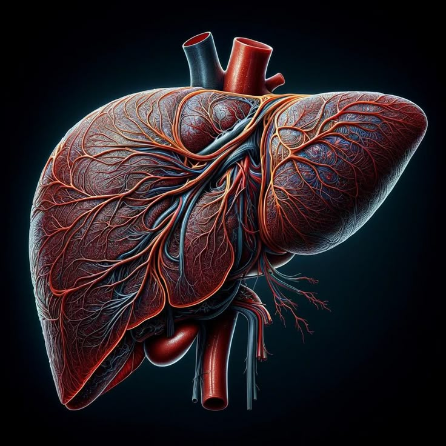

The liver is the largest internal organ in the human body. It removes toxins, stores nutrients, produces bile for digestion, and helps regulate metabolism.
⬅ Back to AnatomyLocated in the upper right side of the abdomen below the diaphragm.
Filters blood, removes toxins, produces bile, and stores vitamins and energy.
The liver is the only internal organ that can regenerate itself after injury.
Fatty Liver Disease
Hepatitis
Liver Cirrhosis